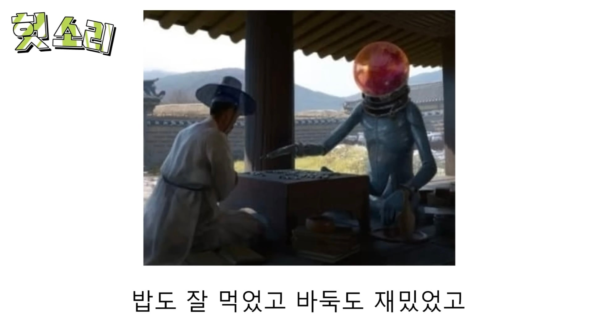
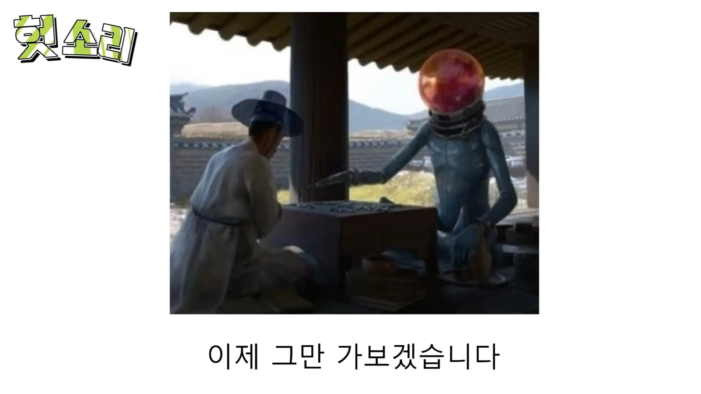
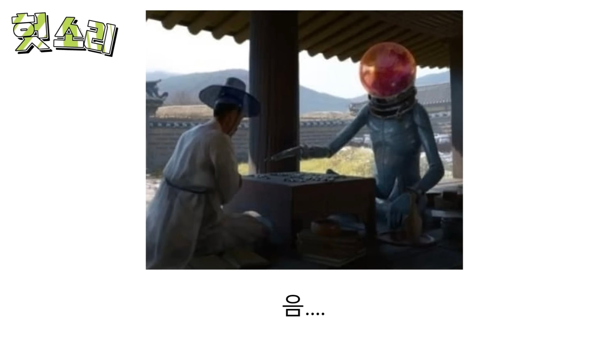
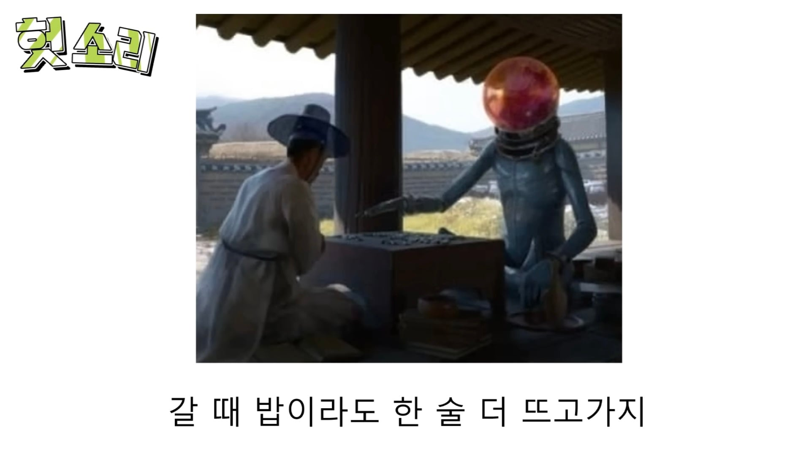
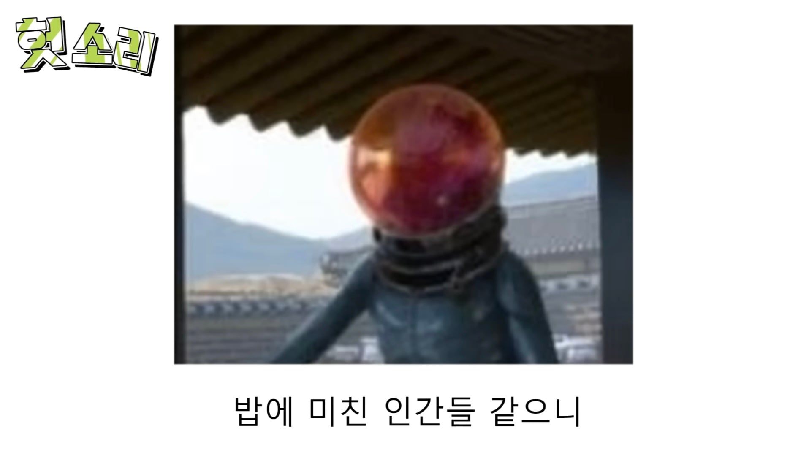
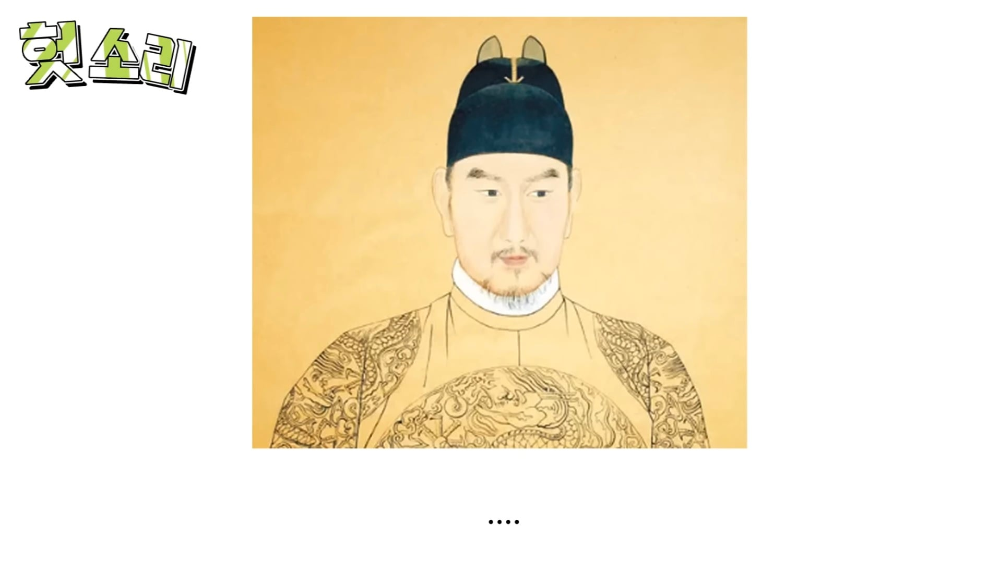
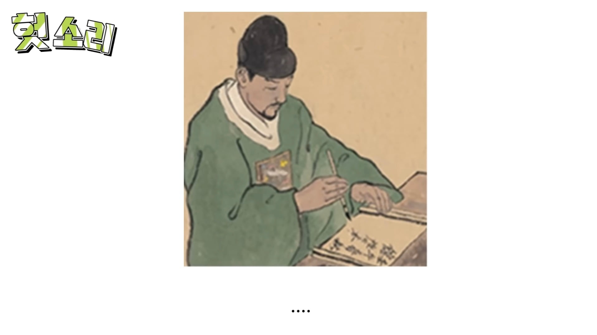
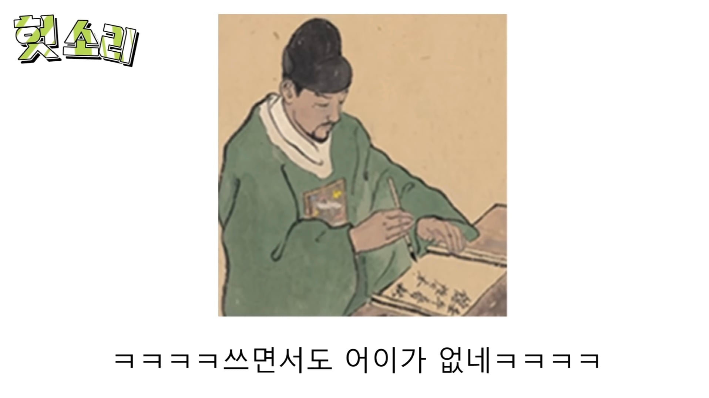

참형 안당하고 장형과 유배 정도로만 끝난게 다행이다 ㅅㅂㅋㅋㅋㅋㅋㅋㅋㅋㅋㅋ








참형 안당하고 장형과 유배 정도로만 끝난게 다행이다 ㅅㅂㅋㅋㅋㅋㅋㅋㅋㅋㅋㅋ
휴 기밀사항 유출될뻔
놀라운게 저때 작성된 외계인 기록이 현존 외계인 기록과 일치한다고 함 ㅋㅋㅋㅋ
묘사가 완전히 동일해서 이건 착오거나 지어낼 수 있는게 아니라고 ㅋㅋㅋㅋㅋㅋㅋㅋㅋㅋㅋㅋㅋ
맞은놈 존나 억울할듯;;;
이 자를 곤장을 후리고 밴하도록 하라
저러다가 집 못돌아가서 군대 24번간 외계인도 있음
큰 솥을 타고 내려왔다
대감 집에서 바둑을 두었다
이 두개는 현대의 창작이고 실록에는 없음
몽두를 쓰고 하늘에서 내려와 밥을 많이 먹고 예언하고 갔다만 적혀있음
더해서 박석로가 벌을 받은 이유는 다른 사람 무고하다 뽀록나서
밥먹은건 진짜라고??ㅋㅋㅋㅋ
어쨌든 밥은 먹이긴 했구나
무슨 예언이었대 ?
어느 날에 비온다
풍년이 들 것이다
특정 일에 태어난 사람 전부 올해 안에 죽는다 정도
외계인: 아이씨 우주선 개발해서 힘들게 왔더니 무슨 예언을 하래 내가 뭐 신이야? 대충 이빨 털고 가야겠다
밥에 미친 인간들 같으니...
밥을 진짜 맥이긴 했다는게 어이가없네 ㅋㅋㅋㅋㅋ
스웨덴에 내렸으면 다 죽였을듯
ㅅㅂㅋㅋㅋㅋㅋㅋㅋ
"아담스키형 우주선이 확실하다니께유!!"
"화포로써 이를 물리치소서"
미스테리오냐
저때 복귀하면서 장영실과 같이 돌아갔나보네
의금부(義禁府)에서 전라도 관찰사(全羅道觀察使)의 계본(啓本)에 의거하여 아뢰기를,
"구례현(求禮縣)에 사는 백정 박석로(朴石老)가 요사스런 말을 지어서 말하기를, ‘보성군(寶城郡)에 거주하는 부자로 사는 사람의 집에 귀신이 있는데, 사람 모양 같고 키가 한 길이 넘으며 몽두(蒙頭)607) 만 쓰고 하늘로부터 내려왔다 하며, 그 집 사람이 늘 식사 때마다 한 말의 쌀로 밥을 지어 먹였더니, 귀신이 말하기를, 「나의 아우도 또 내려오는데, 오면 큰 풍년이 들 것이다.」라고 하였다.’ 하여 여러 사람을 현혹하게 한 죄와, 양녀(良女)인 막가이(莫加伊) 조이[召史], 무녀(巫女) 단정(丹正), 역자(驛子) 망금(亡金)·문금(文金), 통인(通引)608) 중남(仲南), 백정(白丁) 이인부(李仁夫), 백정의 딸 고미(古未)가 박석로의 요사스러운 말을 더 보태어 전하기를, 귀신이 있는데 머리 하나에 상투가 일곱이라고 말하고, 혹은 머리 하나에 상투가 서넛이라고 말하고, 혹은 머리 하나에 상투가 둘인데 능성(綾城)과 보성(寶城)에 내려와 식사 때마다 국과 밥 각 한 동이씩을 먹는다고 하여 여러 사람을 현혹하게 한 죄와, 정병(正兵) 주면(周面)·김자형(金自亨)·임효지(任孝之), 사노(私奴) 이송림(李松林)·길사룡(吉四龍)·임동말(林同末)·중장수(中長守), 학생 이말동(李末同)·이은주(李銀柱), 갑사(甲士) 한덕경(韓德敬), 역자(驛子) 방철(方哲), 중[僧] 성심(性審)·혜공(惠空)·의안(義安)·지수(志脩)·준옥(准玉)·명일(明一)·계순(戒順)·학돈(學頓)·성회(性會)·성운(性云)이 요사스러운 말을 만들어서 이르기를, ‘운남(雲南) 원광사(圓廣寺)에 나이 1백 49세 된 노인이 있었는데, 정해년609) 6월 초10일에 죽었다. 그런데 그 돌아온 혼(魂)이 위로는 천계(天界)에, 아래로는 지부(地府)에 통달하여 인간에게 와서 고하기를, 「경인년610) 3월부터 바람과 비가 몹시 심해 악한 사람은 다 죽는다. 전염병과 전쟁의 재변으로 경인년611) ·신묘년612) 두 해에 사람이 8분(分)은 죽어서, 집은 있으나 사람은 없으며 땅은 있으나 경작하지는 못할 것이다. 그리고 아홉 여자가 한 지아비와 함께 살며 열 집이 한 마리의 소를 함께 부리며, 집에는 연기가 끊어지고 곡식은 쌓아 두고 먹을 것이 없다. 만일 믿지 않는 자는 눈만 멀 뿐이고, 이 글 한 벌[本]을 전하는 자는 자기 한 몸의 재앙을 면하고, 두 벌을 전하는 자는 한 집의 재앙을 면하고, 세 벌을 전하는 자는 크게 평안함을 얻을 것이다. 만일 믿지 아니하고 이 글을 집 속에 감추어 둔 자는 유혈의 재변을 볼 것이다. 이 글은 요동(遼東)에서 온 신강 화상(新降和尙)의 글인데, 이것을 베껴 사람에게 전하여 주라.」 하였다.’라고 하여, 여러 사람을 현혹하게 한 죄는 아울러 율(律)이 참대시(斬待時)에 해당합니다. 〈그러나〉 이것은 유지(宥旨) 전의 일입니다.
그리고 박석로는 위의 요사스러운 말을 문초하려 할 때 도망하여 담양(潭陽)에 있는 어미의 집으로 돌아가서 자기 죄를 면하려고 꾀하여, 그 어미로 하여금 거짓 진술하게 하기를, ‘위의 요사스러운 말은 검진(檢進)에게 들었다.’ 하여, 죄없는 사람을 무고하여 지목한 죄는 율이 장(杖) 1백 대, 유(流) 3천 리에 역(役) 3년을 더하는 데 해당하고, 사정(司正) 임효생(林孝生)이 요사스러운 말을 전하여 듣고 계달(啓達)할 때에, ‘덕지(德只)가 이르기를, 「입 셋이 있는 귀신이 있어서 말하되, 이 달에 비가 오지 않으면 내달에는 마땅히 비가 와야 하는데, 내달에도 비가 오지 않는다면 비록 풀을 제거하여도 이익이 없을 것이며, 금년에는 진생(辰生)·신생(申生)·유생(酉生)의 사람이 모두 죽는다고 하더라.」 하였다.’ 하고, 거짓말을 보태어 계달한 죄는, 율이 장(杖) 1백 대, 도(徒) 3년에 해당하며, 양녀(良女) 덕지가 하교를 받들어 문초할 때 임효생(林孝生)의 지휘를 듣고 따른 것이지 자기가 발설하지 않은 말이라고 거짓 꾸며서 진술한 죄는, 율이 장(杖) 90대, 도(徒) 2년 반에 해당하는데, 단의결별(單衣決罰)을 행하고, 나머지는 죄를 속(贖)하게 하소서."
하니, 그대로 따랐다
재밌네 ㅎ
거의 나무위키구먼
이거 야사가 아니라 실록임?
ㅇㅇ 조선왕조실록
밥은 멕였으니 유배로끝났제
외계인 쉑들 몇 백 년 지나도 원반 타고 다니쥬?ㅋㅋㅋㅋ
지 눈으로 똑똑히 봤구먼유(서울 토박이)